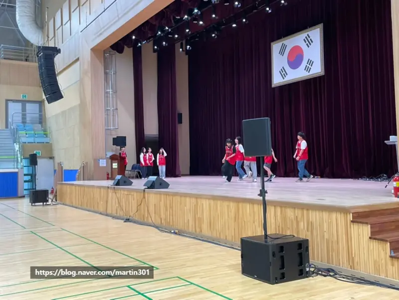
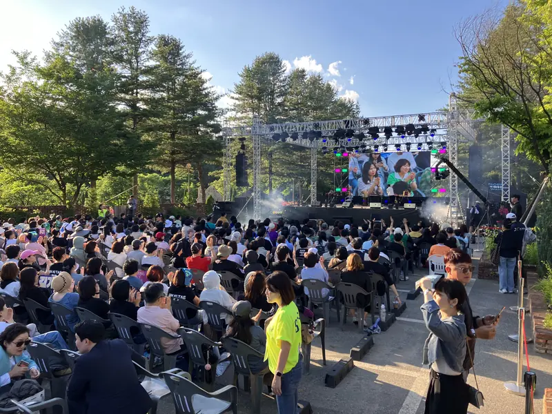
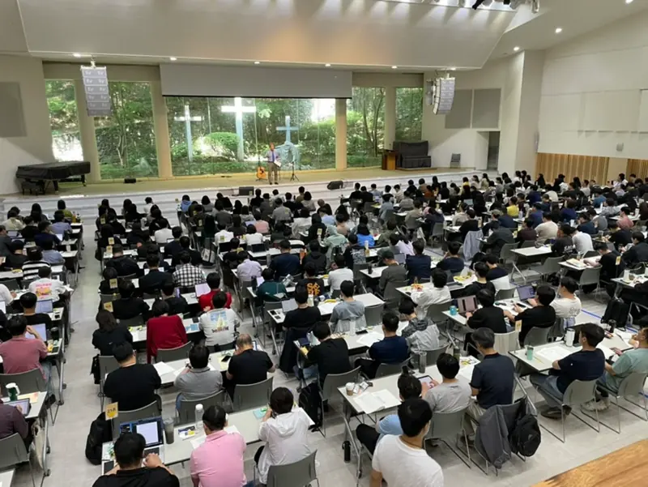
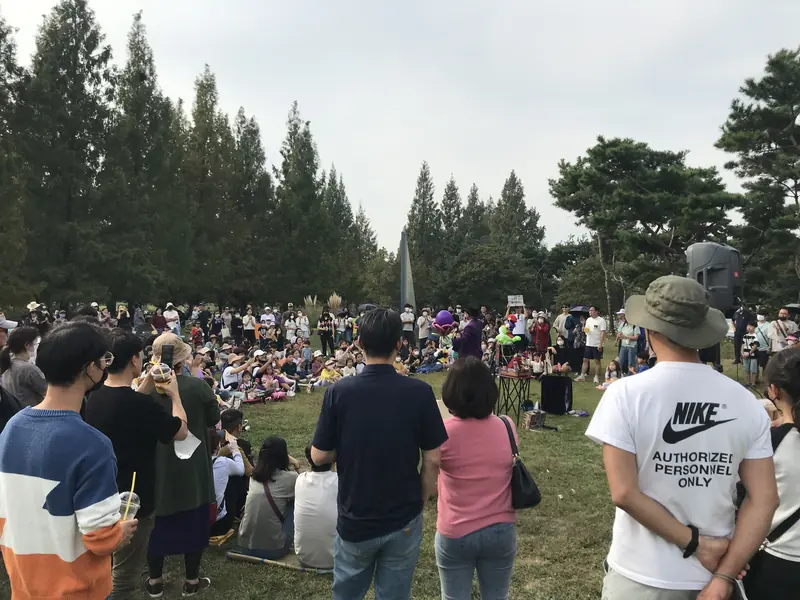
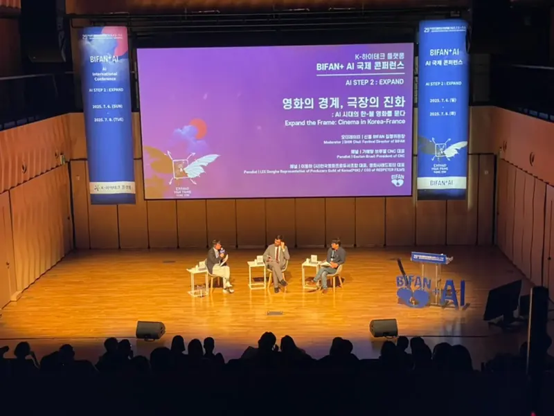

남양주 · 2026년 10월 28일남양주 교회 수련회 음향 준비 — 찬양팀 모니터 · 울림 · 마이크남양주에서 교회 수련회를 준비하는 목회자 · 간사를 위한 글입니다. 남양주 교회 수련회 음향을 객석 스피커와 찬양팀 모니터로 나눠 보고, 넓은 홀의 울림과 마이크 · 견적 문의 전 정리할 것을 정리했습니다.
남양주 · 2026년 10월 28일남양주 교회 수련회 음향 준비 — 찬양팀 모니터 · 울림 · 마이크남양주에서 교회 수련회를 준비하는 목회자 · 간사를 위한 글입니다. 남양주 교회 수련회 음향을 객석 스피커와 찬양팀 모니터로 나눠 보고, 넓은 홀의 울림과 마이크 · 견적 문의 전 정리할 것을 정리했습니다.
 서울 · 2026년 10월 28일서울 입체음향 전시 준비 — 스피커 배치 · 영상 맞춤 · 설치 기간서울에서 이머시브 사운드 · 입체음향 전시를 준비하는 작가 · 기획자를 위한 글입니다. 서울 입체음향 전시를 준비할 때 스피커를 어디에 매달지, 영상과 소리를 어떻게 맞출지, 설치 · 테스트 기간을 얼마나 잡을지 정리했습니다.
서울 · 2026년 10월 28일서울 입체음향 전시 준비 — 스피커 배치 · 영상 맞춤 · 설치 기간서울에서 이머시브 사운드 · 입체음향 전시를 준비하는 작가 · 기획자를 위한 글입니다. 서울 입체음향 전시를 준비할 때 스피커를 어디에 매달지, 영상과 소리를 어떻게 맞출지, 설치 · 테스트 기간을 얼마나 잡을지 정리했습니다.
 남양주 · 2026년 10월 27일남양주 무선마이크 대여 전 확인할 것 — 혼선 · 배터리 · 개수남양주에서 예배 · 세미나 · 행사용 무선마이크를 빌리려는 담당자를 위한 글입니다. 남양주 무선마이크 대여 전에 핸드 · 핀 마이크 개수 세는 법, 혼선과 끊김을 줄이는 점검, 배터리 관리, 하울링 위치를 정리했습니다.
남양주 · 2026년 10월 27일남양주 무선마이크 대여 전 확인할 것 — 혼선 · 배터리 · 개수남양주에서 예배 · 세미나 · 행사용 무선마이크를 빌리려는 담당자를 위한 글입니다. 남양주 무선마이크 대여 전에 핸드 · 핀 마이크 개수 세는 법, 혼선과 끊김을 줄이는 점검, 배터리 관리, 하울링 위치를 정리했습니다.
 양주 · 2026년 10월 27일양주 학교 축제 음향 · 조명 준비 — 학생 공연 마이크와 무대양주에서 학교 축제 · 발표회 무대를 맡은 선생님과 학생회를 위한 글입니다. 양주 학교 축제 음향을 공연 순서표로 준비하는 법, 학생 공연 마이크와 모니터, 무대 조명, 리허설 순서와 견적 문의 전 정리할 것을 정리했습니다.
양주 · 2026년 10월 27일양주 학교 축제 음향 · 조명 준비 — 학생 공연 마이크와 무대양주에서 학교 축제 · 발표회 무대를 맡은 선생님과 학생회를 위한 글입니다. 양주 학교 축제 음향을 공연 순서표로 준비하는 법, 학생 공연 마이크와 모니터, 무대 조명, 리허설 순서와 견적 문의 전 정리할 것을 정리했습니다.

구리 · 2026년 10월 26일구리 체육대회 음향 준비 — 운동장 · 체육관 스피커와 안내 방송구리에서 학교 · 교회 · 회사 체육대회를 준비하는 담당자를 위한 글입니다. 구리 체육대회 음향을 운동장과 체육관으로 나눠 스피커 배치, 안내 방송 마이크, 음악 순서, 전기와 비 대비까지 정리했습니다. 포천 · 2026년 10월 26일포천 교회 음향 교체 상담 준비 — 점검부터 설치까지 확인할 것포천에서 교회 본당 · 교육관 음향을 바꾸려는 목회자 · 방송 담당자를 위한 글입니다. 포천 교회 음향 교체 상담 전에 지금 장비를 점검하는 법, 어디까지 바꿀지 정하는 법, 설치 뒤 사용법 안내까지 정리했습니다.
포천 · 2026년 10월 26일포천 교회 음향 교체 상담 준비 — 점검부터 설치까지 확인할 것포천에서 교회 본당 · 교육관 음향을 바꾸려는 목회자 · 방송 담당자를 위한 글입니다. 포천 교회 음향 교체 상담 전에 지금 장비를 점검하는 법, 어디까지 바꿀지 정하는 법, 설치 뒤 사용법 안내까지 정리했습니다.

가평 · 2026년 10월 25일가평 송년 콘서트 음향 · 조명 준비 — 무대 · 믹서 자리 · 순서가평에서 송년 콘서트 · 연말 고객초청 공연을 준비하는 기업 · 리조트 담당자를 위한 글입니다. 가평 송년 콘서트 음향과 조명을 공연 순서에 맞춰 짜는 법, 믹서 자리 정하기, 실내외 무대 차이와 견적 문의 전 정리할 것을 정리했습니다.
경기 광주 · 2026년 10월 25일경기 광주 세미나 음향 준비 — 강연 마이크 · 스피커 · 여러 날 일정경기 광주에서 수양관 · 연수원 세미나와 컨퍼런스를 준비하는 담당자를 위한 글입니다. 경기 광주 세미나 음향을 강연 마이크, 스피커 배치, 질의응답, 영상 소리, 여러 날 이어지는 일정으로 나눠 정리했습니다.
고양 · 2026년 10월 24일고양 야외 공연 음향 체크리스트 — 객석 · 바람 · 비 · 전기고양에서 공원 · 광장 야외 공연과 음악회를 준비하는 담당자를 위한 글입니다. 고양 야외 공연 음향 체크리스트로 객석까지 소리 보내기, 숲속 · 계단 같은 자리의 스피커 배치, 바람 · 비 기준, 전기와 신고 기준을 정리했습니다.
부천 · 2026년 10월 24일부천 제막식 음향 준비 — 야외 공식 행사 마이크와 스피커부천에서 제막식 · 개막식 같은 야외 공식 행사를 준비하는 기관 담당자를 위한 글입니다. 부천 제막식 음향을 식순표로 짜는 법, 인사 마이크와 스피커 배치, 제막 순간 음악 신호, 날씨와 전기 확인을 정리했습니다.현장 기록은 행사 이야기, 대표가 직접 쓰는 현장 소식은 네이버 블로그(martin301)에 있습니다.
행사 날짜가 잡히셨나요?
날짜와 장소, 대략의 규모만 알려 주세요. 현장에 맞는 구성을 함께 찾아 드립니다. (월~토 09:00~18:00)